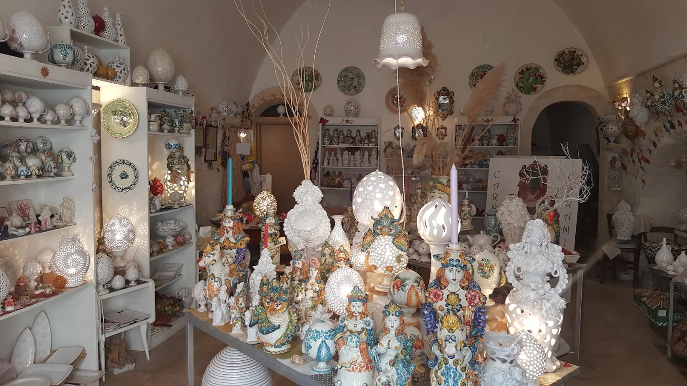

Pezzi unici modellati e decorati nella nostra bottega, nel cuore del quartiere delle ceramiche di Grottaglie.
Scopri il Catalogo →
Dalle figure della tradizione grottagliese ai complementi d'arredo, ogni categoria racconta una parte del nostro lavoro.
Recensioni vere, dai nostri clienti.
Il più bravo artigiano delle creazioni ceramiche di grottaglie e lui!!! Sono da anni sua cliente e consiglio a tutti di passare ad ammirare i suoi capolavori!
Sono andato con mia moglie nella bottega di Leonardo, siamo stati subito colpiti dalla grandissima varietà e bellezza delle opere esposte. Leonardo è stato molto affabile e cordiale, ci ha raccontato la particolarità e la storia delle sue opere artigianali, tutte di ottima fattura e particolari, facendo trasparire tutta la sua passione in quello che fa. Dovevamo scegliere due pensieri per delle nostre amiche e lui ci ha consigliato le opzioni migliori per le nostre esigenze, abbiamo avuto davvero l'imbarazzo della scelta. Per noi è un punto di riferimento per la scelta di regali che facciano effetto, lo consiglio vivamente.
Mentre scegli osservando la maestria di ogni realizzazione, ascolti i racconti di una vita iniziata per passione e realizzata con apertura bottega d'arte. Acquistato oliera, taglliere, porta candela e melagrana che porta fortuna. Da non perdere
Leonardo ormai è di famiglia. Servizi di piatti, lampade, presepi e per finire le bomboniere per il nostro grande giorno. Le abbiamo scelte e personalizzate insieme a lui che ha una pazienza infinita quando si tratta di spiegare il suo lavoro e dare consigli. Un artigiano ed un artista fantastico. Continueremo a tornare. Inutile specificare che i nostri ospiti sono rimasti entusiasti.
Un laboratorio di ceramica davvero meraviglioso! Appena si entra si percepisce la passione e l'amore per questo mestiere. Il negozio è grazioso, accogliente e ricco di pezzi unici, realizzati interamente a mano dal proprietario, un vero artista che crea ogni opera con grande cura e maestria!!! Se cercate autenticità, qualità e artigianato vero, questo è il posto giusto. Consigliatissimo!
Leonardo un vero maestro!originalita',serieta',competenza e professionalità sono doti che contraddistinguono il suo lavoro e fanno dei suoi oggetti creati con le sue sapienti mani dei veri e propri CAPOLAVORI d'arte!
Leonardo e la sua arte sono state davvero una piacevolissima sorpresa. Le sue opere sono davvero una meraviglia, create con maestria e curate nei minimi particolari. Inoltre la sua capacità di illustrare tutte le tradizioni che si celano dietro le sue opere rende l'esperienza ancora più indimenticabile. Se andate a Grottaglie e avete voglia di portarvi a casa una vera opera d'arte, Carpe Diem è una tappa obbligatoria!